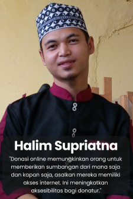

Derma Ceria Details
Derma Ceria – Online Donation Platform
Live DemoDerma Ceria merupakan website donasi yang dirancang untuk memberikan pengalaman berdonasi secara aman, mudah, dan transparan. Project ini dikembangkan sebagai Massive Project pada program Studi Independen dengan fokus pada proses UI/UX Design, mulai dari riset pengguna hingga pembuatan prototype menggunakan Figma.
Saya berperan sebagai UI/UX Designer dalam tim yang bertanggung jawab melakukan user research, menyusun user persona, membuat wireframe, mendesain high-fidelity prototype, serta melakukan usability testing untuk memastikan solusi yang dirancang sesuai dengan kebutuhan pengguna.
📌 Problem Statement
Banyak masyarakat masih melakukan donasi secara offline, namun sering menghadapi berbagai kendala seperti kurangnya transparansi penggunaan dana, tidak adanya bukti transaksi yang jelas, hingga maraknya kasus penipuan yang mengatasnamakan donasi.
Bagaimana menyediakan platform donasi yang aman, mudah digunakan, terpercaya, serta mampu meningkatkan transparansi kepada para donor?
👤 User Persona

Salah satu persona utama adalah Halim, seorang pekerja masjid di Papua Barat yang aktif mengajar namun memiliki keterbatasan waktu untuk melakukan donasi secara langsung.
Ia membutuhkan platform yang memudahkan proses donasi, sekaligus memberikan transparansi terhadap penggunaan dana sehingga dapat berdonasi dengan aman dan penuh kepercayaan.
💡 Big Idea
Derma Ceria hadir sebagai platform donasi digital yang menghubungkan donor dengan organisasi sosial secara aman dan transparan melalui proses verifikasi penggalang dana serta fitur pelacakan donasi secara real-time.
🎨 Design Process
Seluruh proses desain dilakukan menggunakan pendekatan Design Thinking, dimulai dari User Research, Problem Identification, User Persona, User Flow, Wireframe, High Fidelity Design, Interactive Prototype, hingga Usability Testing.
- User Research
- Problem Identification
- User Persona
- User Flow
- Wireframe (Low Fidelity)
- High Fidelity UI Design
- Interactive Prototype
- Usability Testing
🚀 Final Solution
- ⭐ Diverse Donation Options – Donasi uang maupun barang.
- ⭐ Fundraiser Verification – Verifikasi penggalang dana.
- ⭐ Donation History – Riwayat donasi pengguna.
- ⭐ Donation Tracking – Melacak status donasi.
- ⭐ Donation Transparency – Laporan penggunaan dana.
🤝 My Contribution
- ✅ Melakukan riset pengguna dan analisis kompetitor.
- ✅ Menyusun user persona dan user journey.
- ✅ Mendesain wireframe low-fidelity dan antarmuka high-fidelity menggunakan Figma.
- ✅ Membuat prototipe interaktif dan melakukan usability testing menggunakan Maze.
- ✅ Berkolaborasi dengan tim pengembang dalam proses pengembangan aplikasi.
- ✅ Mengimplementasikan desain UI/UX ke dalam antarmuka website menggunakan React.js.
- ✅ Mengintegrasikan frontend dengan REST API untuk menampilkan dan mengelola data.
- ✅ Memastikan tampilan website responsif, interaktif, dan sesuai dengan desain yang telah dibuat.
🧪 Usability Testing
Pengujian dilakukan menggunakan Maze.co untuk mengevaluasi kemudahan penggunaan prototype, mengidentifikasi pain point pengguna, serta memperoleh insight yang digunakan sebagai dasar iterasi desain sebelum tahap development.
📄 Conclusion
Derma Ceria menghadirkan solusi donasi digital yang lebih aman, mudah, dan transparan melalui fitur verifikasi penggalang dana, pelacakan donasi, riwayat transaksi, serta laporan penggunaan dana. Saya berperan sebagai UI/UX Designer sekaligus Frontend Developer, dengan mengimplementasikan desain menggunakan React.js serta berkolaborasi dalam pengembangan aplikasi yang dibangun menggunakan Express.js, Node.js, dan MySQL.
Project Information
-
Project
Derma Ceria -
Category
UI/UX Design • Website -
Duration
April 2024 – June 2024 -
Role
Hacker -
Project Type
Massive Project -
Team
Sambernyawa Team -
Tools
Figma
Maze.co
Trello
VS Code
GitHub
XAMPP -
Technology
React JS
Express JS
Node JS
MySQL -
Research Method
User Research
User Persona
Wireframe
Prototype
Usability Testing -
Target Users
Donors
Charity Organizations
Foundations
Social Communities -
My Responsibilities
User Research
UI Design
Wireframing
Prototyping
Usability Testing